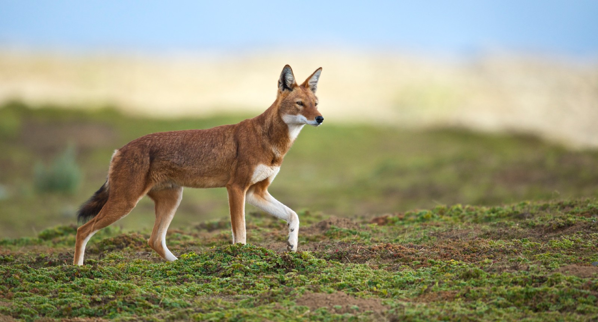
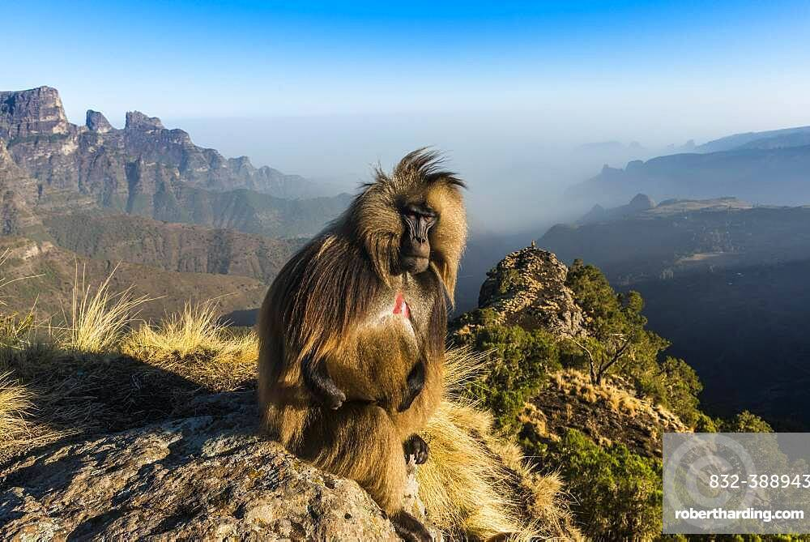
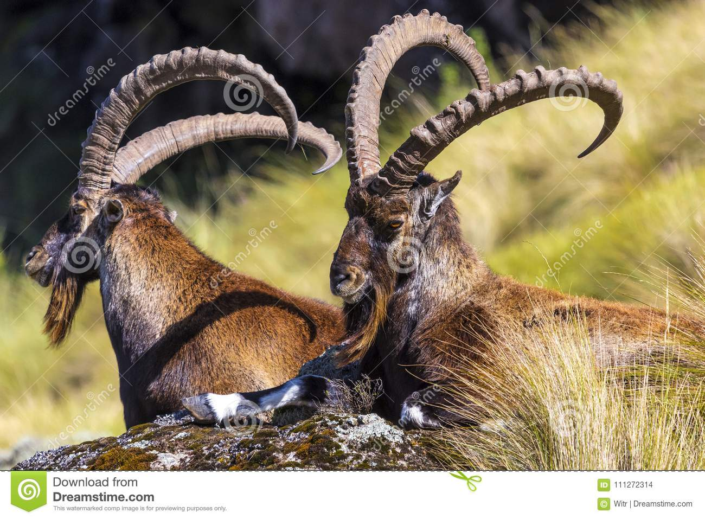
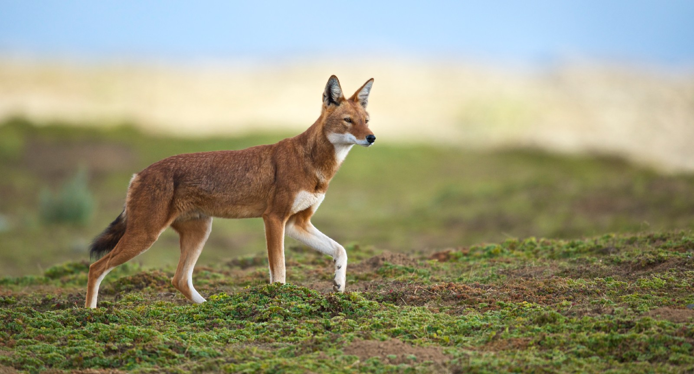
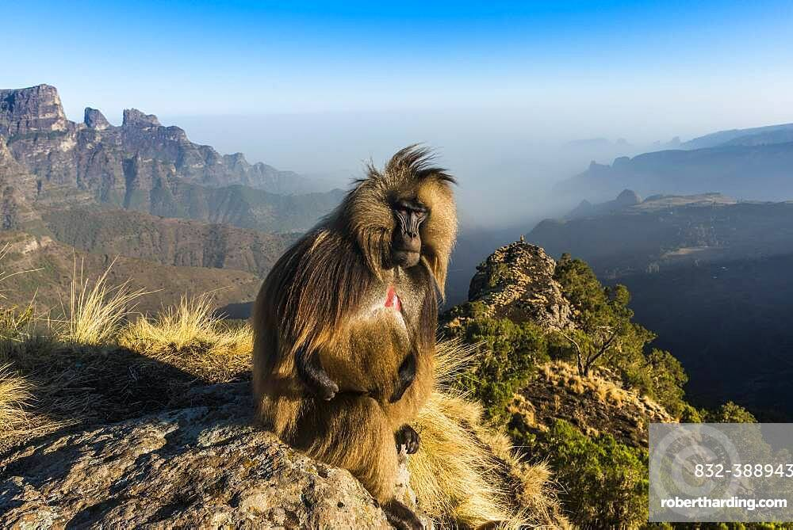
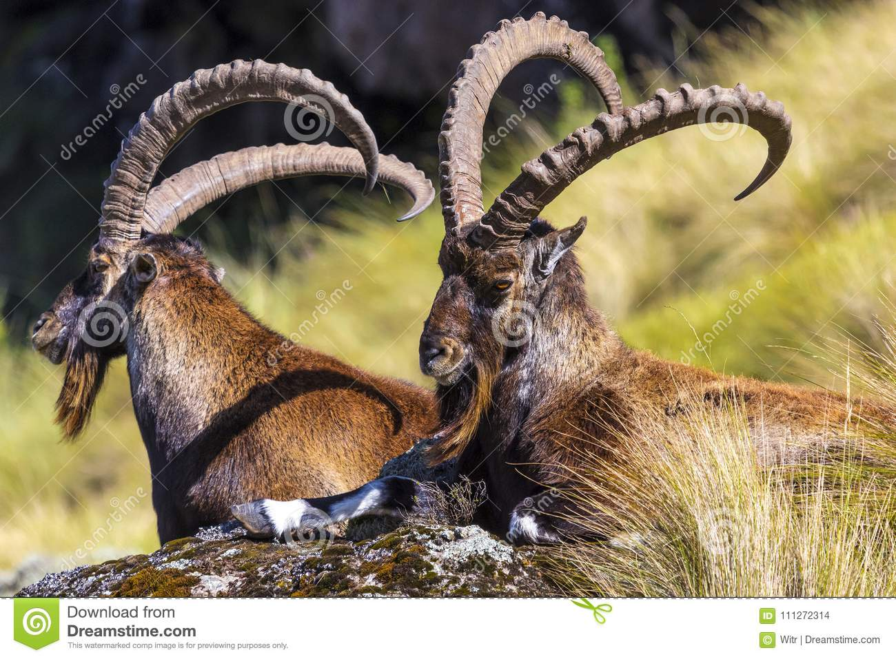

Endemic Mammals
Ethiopia has several species of mammals that are found only in the country. These include the Ethiopian wolf, Gelada baboon, and Walia ibex.
  Ethiopia has several species of mammals that are found only in the country. These include the Ethiopian wolf, Gelada baboon, and Walia ibex.
  